An interactive deep dive into the vocabulary, idioms, and narrative tropes of Friends, Season 3, Episode 15 — “The One Where Ross and Rachel Take a Break”, based on the illustrated lesson deck Master English Through 90s Sitcom Drama.
Few sentences in television history have been argued about as long, as loudly, and as passionately as “We were on a break!” — three small words that kept an entire fan base taking sides for seven seasons. Interestingly, the argument outlived the relationship itself, and the phrase quietly entered everyday English as shorthand for shifting blame after a mess of one’s own making. It is important to understand that this makes the episode more than a piece of nostalgia: it is a working document of how real people use real language under emotional pressure.
This article walks through a richly illustrated English lesson built entirely around the episode. The deck announces its goal on the cover: “Master English Through 90s Sitcom Drama — A linguistic breakdown of vocabulary, idioms, and narrative tropes using The One Where Ross and Rachel Take a Break.” Pay attention to the three-part promise in that title, because the lesson keeps it: everyday vocabulary (office props, workplace crises, romance verbs), vivid idioms (to hit it off, to be a third wheel, to drown one’s sorrows), and the analytical vocabulary of storytelling itself (tropes, ripples, and one very famous misunderstanding). The final page of the material delivers its thesis with a beautiful sentence about language and emotion, and by the end of this article that sentence will feel earned.
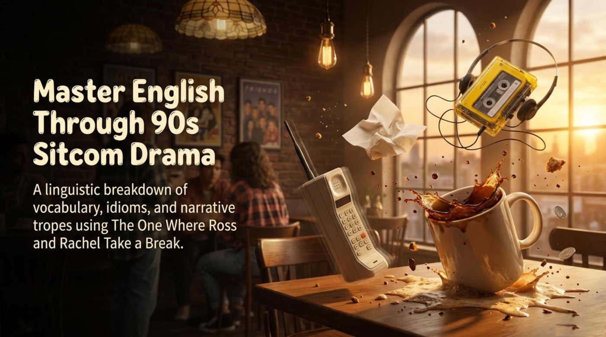
The episode braids three storylines together. In the main thread, Ross and Rachel fight about work, time, and attention, and one ambiguous sentence ends their relationship. In a parallel thread, Phoebe’s double dinner date collapses under a language barrier. In a third thread, a cheerful copy girl becomes the catalyst for the most consequential night of the series. The lesson follows all three, pausing at every turn to hand the learner a word worth keeping.
The lesson begins not with dialogue but with objects, and the choice is deliberate. Physical props anchor abstract words to images, sounds, and memories. The material defines its props with dry comic precision: “Atlas: A book of maps (e.g., used to find fictional countries like Ick-neck-tree-anis),” “Three-hole punch: An office tool used to create holes in paper (accidentally thrown into a picnic basket during an argument),” “Xerox machine / copier: A machine that makes paper copies (e.g., the advanced X-5000),” and “Purchase order: A commercial document issued by a buyer to a seller.”
Notice how each parenthetical joke smuggles in a plot point. The atlas pokes fun at a name nobody can pronounce, the three-hole punch references a picnic basket turned into ammunition during an argument, and the purchase order sets up the office disaster that drives the whole episode. A purchase order sounds like boring business paperwork until it becomes the reason a relationship ends. The key point is that vocabulary sticks when it is attached to a scene: nobody forgets three-hole punch after picturing it landing in a picnic basket.
Practical advice: build a props list from any show you watch. Pause, name every visible object in English, and invent one absurd sentence that connects two of the objects. The absurdity is the glue.
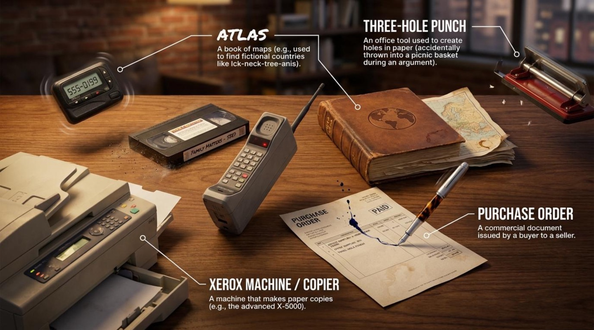
The first storyline the lesson dissects is the subplot, and it is a masterclass in naming social roles. The material introduces four characters with card-like captions: “Sergei (the diplomat). Action: Speaks no English. Uses Diplomatic Coupons,” “Mischa (the translator). Action: Acts as the intermediary but commits the Screw This, I’m Outta Here trope by resigning,” “Phoebe (the date). Action: Experiences a severe Language Barrier,” and “Monica (the friend). Action: Brought in to prevent Mischa from being a Third Wheel, but she and Mischa hit it off (connect instantly), leaving Phoebe completely isolated.”
The real-life lesson here is deliciously ironic: the fix becomes the problem. Monica is recruited to fill the empty seat at the table, and she ends up connecting instantly with Mischa while Phoebe — the actual date — sits isolated between two people whispering in a language she does not speak. It should be noted that the material treats the language barrier not as a joke prop but as a named obstacle, capitalized like a character in the scene. For a language learner, that is a moment of recognition: every learner has sat at Phoebe’s seat of the table, smiling at conversations moving too fast.
Practical advice: retell this subplot in four sentences, one per character, using the four role words — diplomat, translator, date, friend. Naming roles forces you to practice the exact nouns and verbs the material highlights, and the exercise turns a comedy of errors into a structured story you can tell at a dinner party of your own.
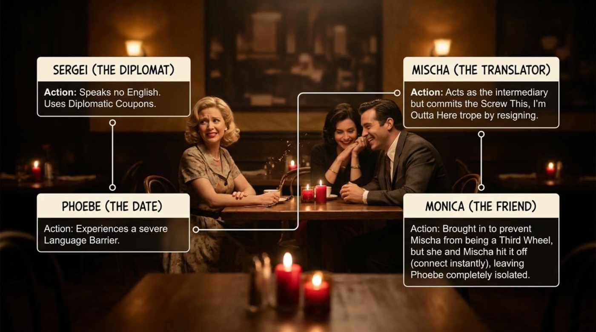
The lesson then moves to the copy shop, where the episode parks its most colorful romance vocabulary on one character: Chloe, the copy girl. The material defines the scene’s verbs and tropes in quick strokes: “To gawk at: To stare openly and stupidly,” “To have a crush on: A strong, temporary feeling of romantic attraction,” “The Genki Girl: A character trope defining someone with boundless, cheerful, and sometimes exhausting energy,” and “The Bore: A trope where a character’s singular obsession (e.g., collating paper) quickly kills romantic interest.”
Pay attention to the verb to gawk at, because the material’s two adverbs — openly and stupidly — carry the entire comic judgment. A person looks; a person gawks only when the looking becomes a spectacle. The scene the lesson describes is exactly that spectacle: two stunned men staring at a woman who is laughing at a photocopier with genuine joy. The Genki Girl label, borrowed from Japanese pop-culture criticism, explains why her energy is both magnetic and overwhelming, while The Bore shows the opposite failure — a character so obsessed with collating paper that romance dies on contact.
Practical advice: learn romance verbs in opposite pairs. To have a crush on pairs with to kill romantic interest; to gawk at pairs with to glance at. Words memorized in pairs come with built-in contrast, and contrast is what makes usage precise.
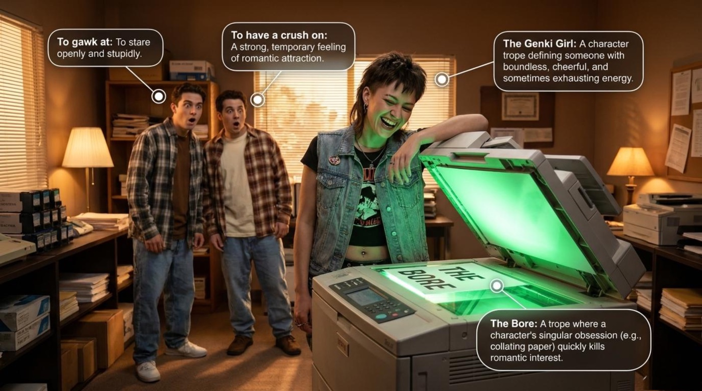
The main storyline begins at Rachel’s desk, and the lesson arms the learner with the vocabulary of workplace catastrophe: “The Deadline: A strict time limit for a task,” “To Interrupt: To stop someone from speaking or working,” “The Crisis: An emergency situation (e.g., shipping 3,000 bras to personnel by mistake),” “To Ignite: To catch fire,” and “A ‘Shemp’: An idiom referring to an annoying, bumbling person causing chaos.”
The example attached to the crisis is worth savoring, because three thousand bras mailed to the personnel department is the kind of error that turns a career-making week into a career-ending one. The visual page shows Rachel shouting into a landline while a picnic basket spills fruit across her desk and a pile of papers ignites beside a candle — the material’s way of saying that to ignite is both literal and metaphorical here. Meanwhile, a Shemp is the human version of the same chaos: the person who turns a bad day into a disaster movie.
The lesson then lays out the two emotional states that collide over this burning desk, in a side-by-side panel. Rachel’s state: “Ambitious: Establishing roots in a new career,” “Overwhelmed: Managing severe workplace crises,” “Asserting Boundaries: Demanding space to focus (I don’t have ten minutes!).” Ross’s state: “Insecure: Carrying baggage and fear from past betrayals,” “Dismissive: Minimizing her career (It’s just a job!),” “Clingy: Refusing to respect stated boundaries by forcing a workplace picnic.”
The two quoted cries — “I don’t have ten minutes!” and “It’s just a job!” — are the entire conflict in miniature. One character demands time; the other dismisses what the time is for. The key point is that neither state is villainous: ambition and insecurity are both reasonable feelings that become destructive only when they stop listening to each other. Pay attention to the adjectives the material chooses, because they are precisely the words English speakers reach for when describing their own working lives.
Practical advice: before your next difficult conversation, name your own state in two of these adjectives — overwhelmed, insecure, clingy, dismissive — and name the other person’s state generously. The vocabulary turns feelings into discussable objects, which is the first step toward not throwing office equipment into picnic baskets.
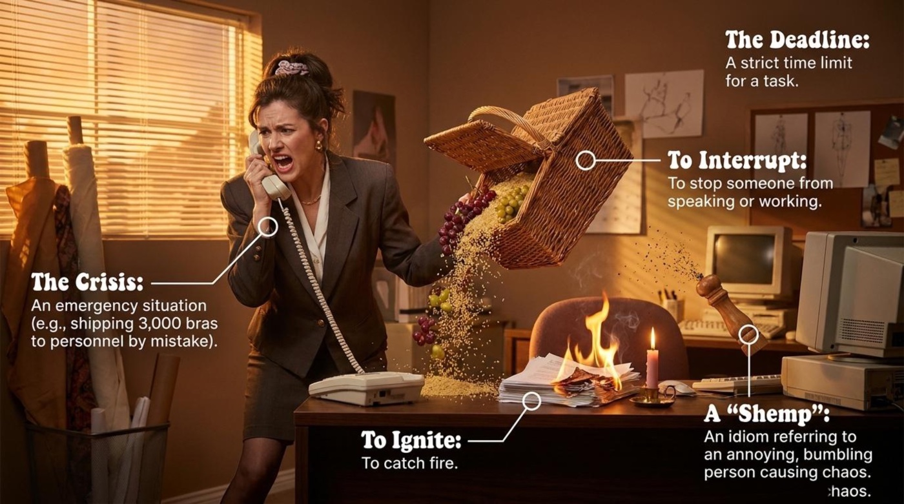
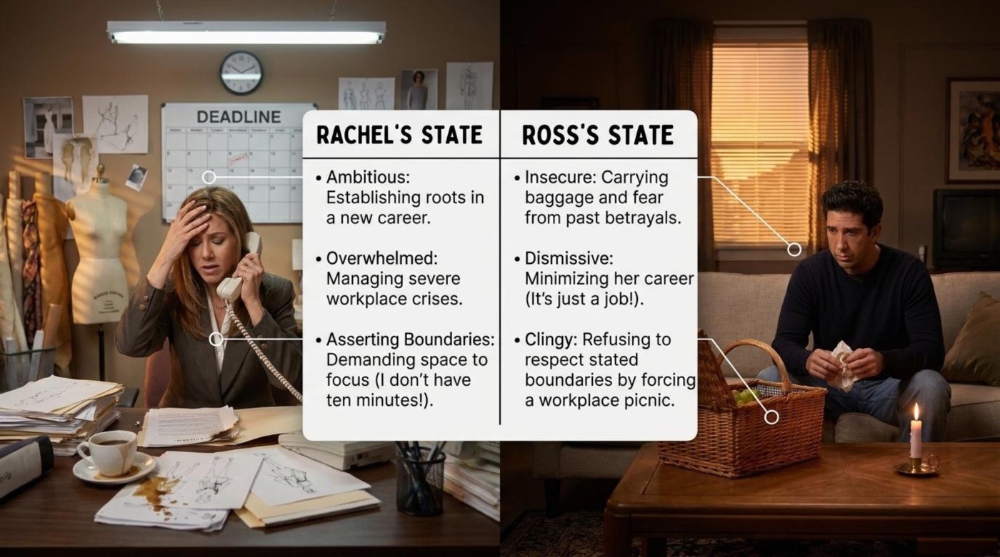
Then comes the sentence the series never recovered from, and the material gives it a full page with three columns. The literal column belongs to Ross: “Literal Meaning (Ross’s interpretation): To pause an activity to cool off (e.g., Let’s get some frozen yogurt).” The idiomatic column belongs to Rachel: “Idiomatic Meaning (Rachel’s clarification): A temporary or permanent separation in a romantic relationship (No. A break from us).” And the third column names the trope: “The Trope (Rage Breaking Point): The moment a character finally snaps after repeatedly hashing out the exact same argument, leading to a drastic decision in the heat of the moment.”
⚠️ This is the most important vocabulary page in the entire lesson, so read it slowly. One three-word phrase carries two incompatible meanings, and each character acts on their own version. Ross hears an invitation to cool off over frozen yogurt; Rachel announces a break from the relationship itself. The clarification “No. A break from us.” is her attempt to repair the definition gap, and the tragedy is that the repair arrives too late to control what happens next. The Rage Breaking Point trope explains the mechanism: people do not make drastic decisions during calm conversations; they make them in the heat of the moment, after the same argument has been hashed out one time too many.
Practical advice: when an idiom can flip a life decision, paraphrase it out loud before acting. The formula is simple and portable — “Let me make sure I understand: you mean a pause in the relationship itself, not a pause for frozen yogurt.” Ten seconds of clarification would have saved seven seasons of arguing, which is excellent value for ten seconds.
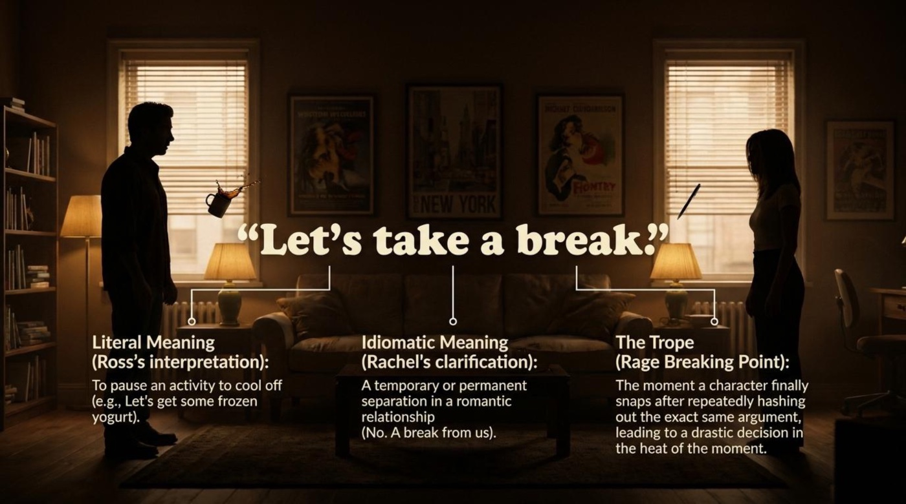
The lesson’s most teachable page dissects the famous phone call into four beats, each with its own sequencing adverb: “First: Rachel waits by the phone for Ross to call,” “Meanwhile: Mark unexpectedly arrives at Rachel’s apartment with Chinese food, refusing to take no for an answer,” “Suddenly: Ross calls to reconcile and hears Mark’s voice in the background,” “Consequently: Ross assumes the worst (sabotage/infidelity), angrily hangs up, and heads to the dance floor.”
Look at the machinery. Both characters spend this scene trying to repair the relationship — Rachel waits by the phone, Ross dials to reconcile — and the repair fails anyway, because an uninvited guest with noodles chooses exactly the wrong minute to refuse taking no for an answer. The material appends a trope alert that every storyteller should frame: “Trope Alert (The Idiot Ball): A narrative device where a conflict is driven by characters acting unnaturally foolish or failing to communicate basic facts.” The Idiot Ball is why sitcom couples feel simultaneously unlucky and frustrating: the plot needs the misunderstanding, so someone must briefly stop being sensible.
Practical advice: borrow the four adverbs — first, meanwhile, suddenly, consequently — as a storytelling template. Retell any conflict from your week in exactly four sentences with those four openers. The structure forces you to separate what happened first from what you assumed afterward, which is precisely the skill the characters in this scene lack.
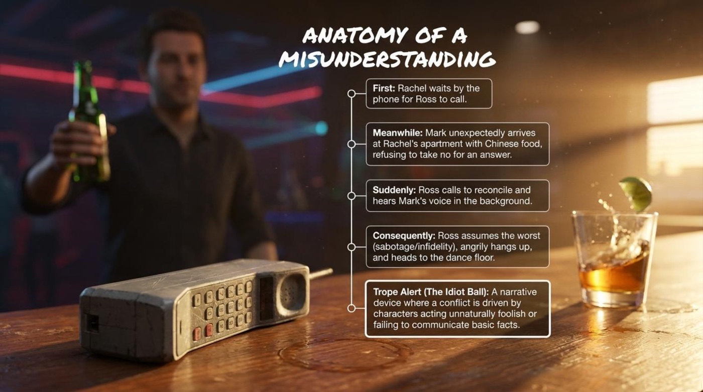
After the hang-up, the story moves to a nightclub, and the lesson switches to the vocabulary of vulnerability. Three verb phrases describe the night: “Drowning one’s sorrows: Drinking alcohol to forget one’s emotional problems,” “Making a move: Initiating romantic or sexual contact with someone,” and “Finding solace: Seeking comfort in a time of intense sadness or vulnerability.” The material adds a fourth term for the storytelling effect itself: “Mood Whiplash: A jarring shift in storytelling tone — moving instantly from lighthearted comedy to devastating betrayal.”
The three phrases form a chain, and the chain is the scene. A man drowns his sorrows; a woman finds him seeking solace in the wrong place at the wrong time; someone makes a move; the show whiplashes from a laugh line to a betrayal in a single cut. Notice that finding solace is framed as something vulnerable people do, not as something villains do — the material’s word choice keeps the sympathy alive for everyone in the scene. Mood Whiplash, meanwhile, is a term you can reuse for films, novels, and news cycles; once you can name the effect, the effect stops being invisible.
Practical advice: these three verb phrases are Friday-night English — the register of songs, gossip, and movies. Use drowning one’s sorrows and making a move in your own stories this week, and notice how quickly native speakers warm to conversations that carry a little drama.
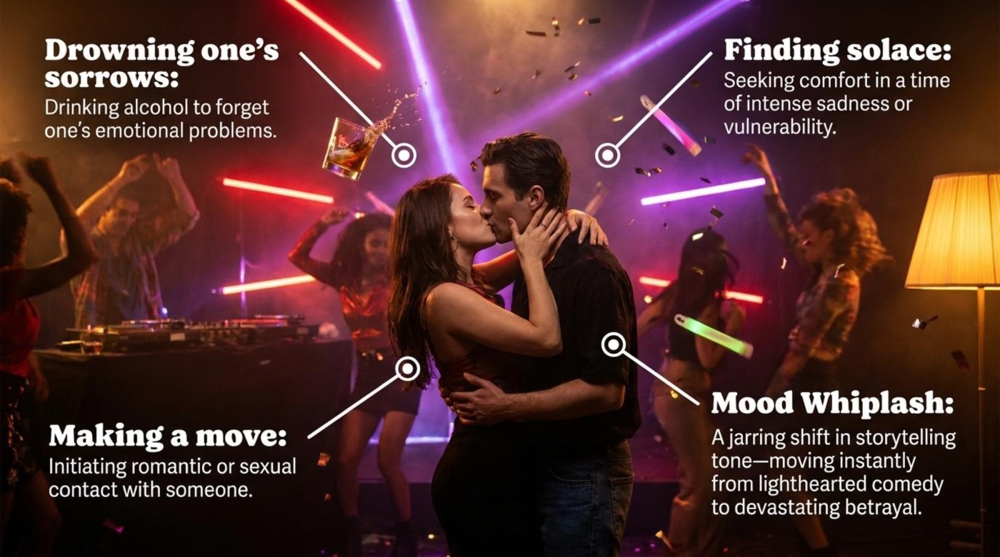
The material refuses to hand down an easy judgment, and instead stages a courtroom. Team Ross (The Defense) argues: “Suspicions Validated: Mark did want Rachel and immediately showed up,” “Heat of the Moment: Acted out of intense pain, believing the relationship was over,” “Mitigating Factor: Worst fears (rooted in past trauma) appeared to be coming true.” Team Rachel (The Prosecution) counters: “Gaslighting: Manipulating someone into doubting reality (blaming Rachel for the picnic),” “Boundary Violation: Refusing to accept no for an answer at her workplace,” “Premature Escalation: Sleeping with someone else hours after a fight, removing the chance for reconciliation.”
Read the two columns side by side and the debate becomes a lesson in argumentation itself. The defense speaks of fears and context; the prosecution speaks of actions and timing. The word gaslighting is the heaviest item on the page — the accusation that Ross rewrote reality itself — while the defense’s mitigating factor is the legal term for a reason that softens blame without erasing it. The key point is that the material’s heading is synthesizing the debate, not winning it: the exercise trains you to hold two strong positions in your head at once.
Practical advice: pick the side you disagree with and argue it for two minutes in English, using the six quoted phrases as your evidence. Arguing a position you dislike is the fastest way to upgrade from memorized phrases to genuinely flexible language.
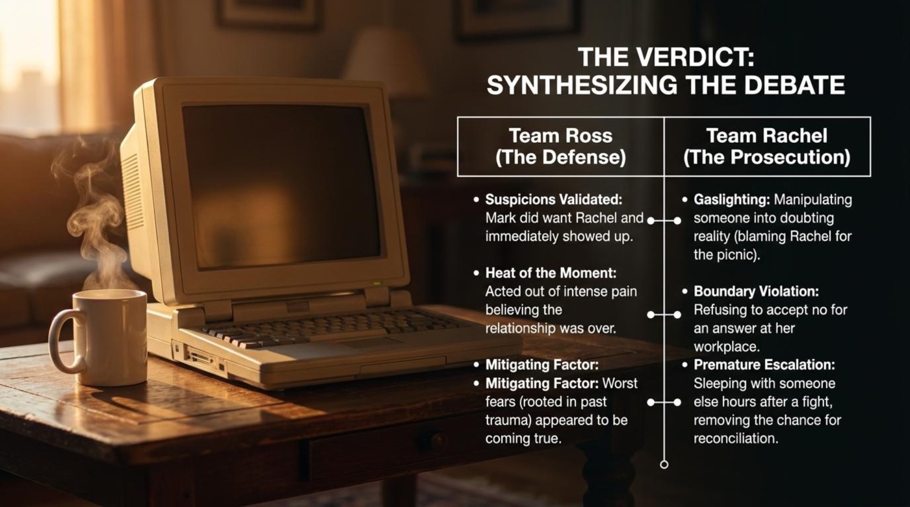
The lesson then zooms out from this episode to television as a whole, and hands the reader three terms of narrative criticism: “Cerebus Syndrome: When a series that starts off light and comical gradually takes on a darker, more serious, and dramatic tone,” “Manic Pixie Dream Girl (Deconstructed): A quirky, energetic woman whose efforts to cheer up the male protagonist actually wreck his life with serious negative consequences,” and “Irony: A situation that is strange or funny because things happen in a way that seems the exact opposite of what you expected (e.g., Chloe cheerfully introducing Ross to Chandler and Joey).”
Pay attention to how much explanatory power these three terms carry. Cerebus Syndrome names the exact journey of this show, which began as a comedy about six friends drinking coffee and gradually became a drama about custody battles and broken marriages. The deconstructed Manic Pixie Dream Girl re-reads the cheerful copy girl not as a plot reward but as a plot hazard, whose spark arrives at the worst possible moment. And the definition of irony lands on the episode’s cruelest joke: the same cheerful copy girl who slept with Ross then cheerfully introduced him to his two best friends, who had no idea what had just happened.
Practical advice: watch one episode of an old sitcom this week and label its shifts with these terms. Language learners who can discuss why a scene feels heavy or light move from consuming stories to analyzing them, and analysis is where advanced vocabulary actually lives.
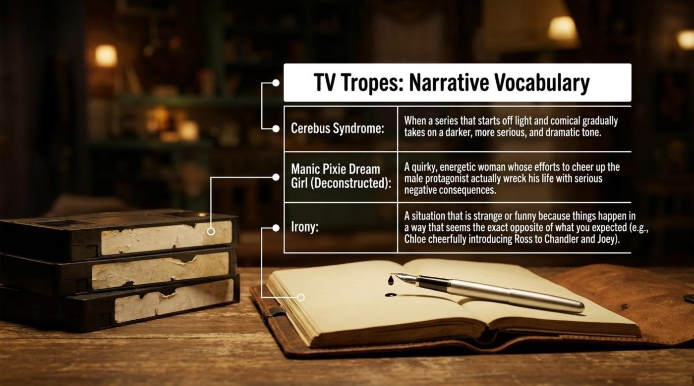
Hidden inside the copy-shop chaos is one of the most charming grammar lessons in the whole material, introduced with a quotation: “The Quote: Let’s Ross it!” The context is pure Ross: “Ross insisted the copy shop blow up a document by 400% — something they had never done before.” The grammar rule is stated with textbook clarity: “In informal English, a proper noun (a person’s name) can be transformed into an action verb to describe an action famously associated with that person.” And the meaning is delightfully absurd: “To Ross something means to aggressively enlarge it by 400%.”
Interestingly, this linguistic trick — turning a person into a verb — is how English has always absorbed its celebrities and its accidents. The language already says that people google answers and hoover carpets, and this lesson shows the process happening live, in one scene, around one photocopier. A name becomes a verb the moment a person’s signature move becomes repeatable, and a 400% enlargement performed against all professional advice is certainly a repeatable move. The key point is that grammar flexibility is a sign the language is alive: any noun with a strong enough personality can earn verb status.
Practical advice: coin one verb from a friend’s name this week and use it until it feels natural — the way one might Maria a dinner party by organizing everyone’s seats, plates, and pour times. Inventing person-verbs is a game, and it quietly teaches you how English builds meaning.
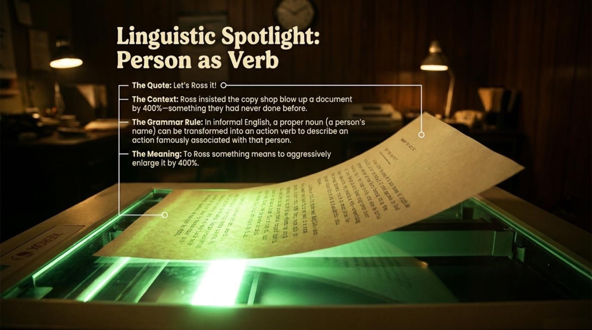
The final analytical page of the story section answers the question of how a cheerful copy girl became the most important guest character of the decade, and it does so as a four-step chain: “The Catalyst: Chloe (the copy girl) invites Chandler and Joey to a club,” “The Intersection: Ross goes to the club to intercept Chandler and Joey after his fight with Rachel,” “The Action: Chloe hits on and sleeps with a vulnerable, drunken Ross,” “The Ripple Effect: A single, brief appearance by a minor character destroys a core relationship, triggering a debate (We were on a break!) that lasts for seven years.”
The Ripple Effect is the material’s name for the terrifying arithmetic of stories: a minor character with a few minutes of screen time produces consequences that echo for years of narrative. Pay attention to the word catalyst, borrowed from chemistry — the substance that triggers a reaction without being consumed by it. Chloe walks into one scene, changes everything, and walks out of the story almost immediately. The chain structure (catalyst → intersection → action → ripple) is as useful for describing office politics and family gatherings as it is for television.
Practical advice: describe one chain reaction from your own life using the four labels. The exercise teaches narrative cause-and-effect vocabulary, and it also teaches humility — everyone has unknowingly been somebody’s catalyst.
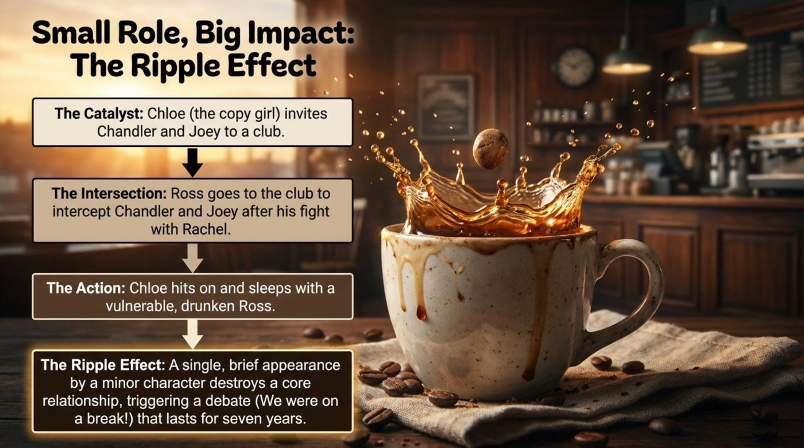
The vocabulary pages of this lesson work like flash cards with a memory attached, and the theme is the relationship arc itself. Every idiom below describes one stage of the same story: attraction (to have a crush on), connection (to hit it off), intrusion (to be a third wheel), conflict (to cross a boundary), coping (to drown one’s sorrows), escalation (to make a move), and the pause that became a punchline (to be on a break). Learn them in this order and you are not memorizing a list; you are learning to narrate a romance from first glance to final verdict.
Literal meaning There is no physical action involved — nothing is being hit, and nothing is falling off. The words only work together as a unit.
Figurative / contextual meaning To instantly connect with someone; two people liking each other within the first minutes of a meeting.
Example from the material “…she and Mischa hit it off (connect instantly), leaving Phoebe completely isolated.” The parentheses do the learner a favor: the material translates its own idiom on the spot, modeling exactly what you should do mentally every time you meet a new phrase.
How the material explains it The idiom checklist states: “To hit it off: To instantly connect with someone.” A compact, reusable definition — memorize it verbatim and you own the phrase.
Literal meaning The picture of an extra, unneeded wheel bolted onto a vehicle — it adds no speed and a great deal of wobble.
Figurative / contextual meaning The awkward, unnecessary extra person in a romantic setting; the one who watches the chemistry happen from one chair over.
Example from the material “Brought in to prevent Mischa from being a Third Wheel” — Monica is recruited to fill the empty chair at the dinner table, and the plan backfires spectacularly when she connects with Mischa instead, leaving the actual date alone.
How the material explains it The checklist reads: “To be a third wheel: To be the awkward, unnecessary extra person in a romantic setting.” The triple adjectives — awkward, unnecessary, extra — stack the social pain into one line.
Literal meaning No crushing occurs — the noun here is a feeling, not an act, which is a reminder that English nouns often drift far from their verbs.
Figurative / contextual meaning A strong, temporary feeling of romantic attraction, usually unspoken and usually doomed to fade or to be acted upon.
Example from the material The copy-shop scene, where two stunned men develop exactly this temporary attraction for the laughing copy girl while she leans on her beloved Xerox machine.
How the material explains it The definition is precise about duration: “To have a crush on: A strong, temporary feeling of romantic attraction.” The word temporary is doing the real work — a crush is defined by its shelf life.
Literal meaning To stare — the base action is simply looking at something for a long time.
Figurative / contextual meaning To stare openly and stupidly — longer, louder, and more judgment-inviting than a glance; the looking has become a spectacle.
Example from the material Chandler and Joey’s open-mouthed reaction at the copy shop, staring at a woman who is joyfully hugging a photocopier. The comedy lives entirely inside the verb.
How the material explains it “To gawk at: To stare openly and stupidly.” Notice the adverb pair: openly supplies the shamelessness, stupidly supplies the comedy, and together they distinguish gawking from polite curiosity.
Literal meaning A break is a pause — a rest from an activity, exactly like the pause Ross believed he was being offered.
Figurative / contextual meaning A temporary pause in a romantic relationship, with the couple’s status left dangerously undefined — the most consequential ambiguity in sitcom history.
Example from the material “No. A break from us.” — Rachel’s clarification, delivered after Ross has already interpreted the phrase as an invitation to frozen yogurt and calm reflection.
How the material explains it The checklist keeps it simple: “To be on a break: To temporarily pause a relationship.” The deeper page adds the fatal detail: the material contrasts “To pause an activity to cool off” with “A temporary or permanent separation in a romantic relationship.”
Literal meaning To physically step over a marked line — a fence, a border, a painted stripe.
Figurative / contextual meaning To violate someone’s stated limits or rules; to keep pushing after a person has clearly said where the line is.
Example from the material A workplace picnic forced on someone who has just announced “I don’t have ten minutes!” — the prosecution’s column calls this “Refusing to accept no for an answer at her workplace.”
How the material explains it The checklist definition is blunt and modern: “To cross a boundary: To violate someone’s stated limits or rules.” The word stated matters — boundaries must be expressed to be crossed, which is why honest statements of limits are so valuable.
Literal meaning The vivid, slightly dark image of sinking sadness under liquid until it stops talking.
Figurative / contextual meaning To drink alcohol in order to forget emotional problems; coping by anesthetic rather than by solution.
Example from the material The nightclub scene, where Ross — freshly hung up on and freshly furious — takes his pain to the bar, and the bar takes it from there.
How the material explains it The lesson defines it with the possessive intact: “Drowning one’s sorrows: Drinking alcohol to forget one’s emotional problems.” Keeping one’s in the definition preserves the reflexive structure you need to use the phrase correctly.
Literal meaning A move in a game such as chess — a deliberate action taken within a rules-based contest.
Figurative / contextual meaning To initiate romantic or sexual contact with someone; the moment watching turns into acting.
Example from the material The chain’s decisive beat: “Chloe hits on and sleeps with a vulnerable, drunken Ross.” The material’s neutral phrasing lets the reader judge the timing, not just the act.
How the material explains it “Making a move: Initiating romantic or sexual contact with someone.” The game metaphor is honest about what the phrase implies — strategy, timing, and a target — which is also why the phrase pairs so naturally with conversations about consent.
The eight terms above are now packed into flip cards. Click or tap any card to turn it over; the front shows the term, its part of speech, and a one-line hook, while the back carries the literal meaning, the contextual meaning, the example from the material, and a short note on why the term matters. Tab to a card and press Enter or Space to flip it without a mouse.
The material ends its language section with a checklist pinned to the apartment fridge, held up by a banana magnet, and the humor is the point: idioms belong in kitchens, not just in classrooms. The full list reads: “[x] To hit it off: To instantly connect with someone, [x] To be a third wheel: To be the awkward, unnecessary extra person in a romantic setting, [x] To be on a break: To temporarily pause a relationship, [x] To cross a boundary: To violate someone’s stated limits or rules, [x] To drown one’s sorrows: To drink alcohol to forget emotional pain.”
Five phrases, five ticks, and each tick marks a phrase that appeared in a specific emotional moment of the episode. The checklist quietly teaches the best revision habit of all: tie every idiom to the scene where you met it, because a phrase with a face and a failure attached never needs to be memorized twice.
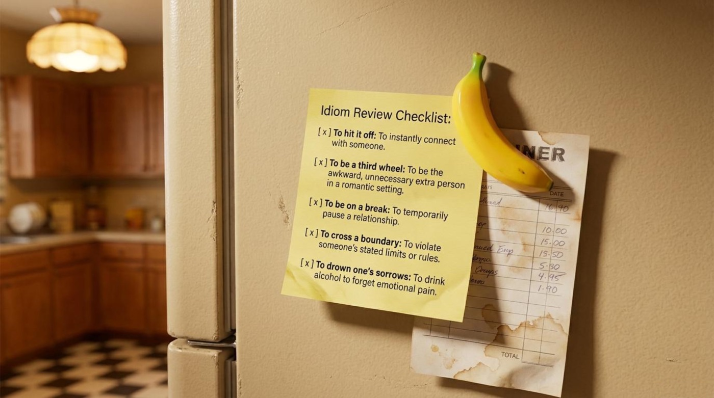
Beyond its vocabulary lists, the lesson carries a set of big ideas that turn a sitcom episode into a study of language, communication, and consequence. Four of them deserve a closer look, because each one changes how a learner understands the material — and how a person understands the conversations in their own life.
The central symbol of the episode is not an object but an ambiguity. The material devotes its most dramatic page to the split: “Literal Meaning (Ross’s interpretation): To pause an activity to cool off (e.g., Let’s get some frozen yogurt)” against “Idiomatic Meaning (Rachel’s clarification): A temporary or permanent separation in a romantic relationship (No. A break from us).” The significance is enormous: the entire plot — the phone call, the club, the seven-year argument — flows from a definitional gap between two fluent speakers of the same language. The lesson’s page teaches that idioms are not decoration; they are contracts. When two people sign different contracts while using the same words, the fallout is not a grammar mistake but a life event. The Rage Breaking Point trope completes the picture by explaining the timing: drastic decisions cluster at the moment the same argument has been hashed out one time too many. Understanding this symbol upgrades a learner’s listening skills permanently — ambiguous relationship vocabulary deserves an out-loud paraphrase before it deserves an action.
The material’s Trope Alert names the mechanism behind the plot’s most frustrating scene: “The Idiot Ball: A narrative device where a conflict is driven by characters acting unnaturally foolish or failing to communicate basic facts.” The symbol matters because it is honest about how drama works: misunderstandings do not survive five acts because the characters are stupid; they survive because the story needs them to. Rachel hears Mark’s voice at the worst second; Ross assumes sabotage instead of asking one clarifying question; neither sends the follow-up message that would end the episode in twenty minutes. The lesson turns this frustration into vocabulary, and the vocabulary into self-awareness — the Idiot Ball is passed in real life too, in every meeting where a basic fact goes unspoken because everyone assumes it is already known. The practical takeaway is one sentence long: the cost of asking a clarifying question is almost always smaller than the cost of a misunderstanding.
The lesson’s chain page elevates a minor character into a case study in causality: “A single, brief appearance by a minor character destroys a core relationship, triggering a debate (We were on a break!) that lasts for seven years.” The symbol of the ripple — one pebble, ever-widening circles — reframes the whole episode. Chloe’s friendly invitation to two friends, Ross’s decision to intercept them, and one unplanned night together form a chain in which every link is small and the final result is enormous. The material’s labels — catalyst, intersection, action, ripple — are borrowed equally from chemistry and storytelling, and that is exactly the point: the same template describes how a careless email, an overheard remark, or a chance meeting reshapes a workplace or a family. For a language learner, the symbol carries a bonus: narrative cause-and-effect connectors (first, meanwhile, suddenly, consequently, as a result) are among the highest-value words in any exam or presentation, and this episode is a ready-made practice text for all of them.
The final page of the material zooms all the way out and states the lesson’s thesis: “Language is rarely learned in a vacuum.” The symbol here is the dictionary itself — not a shelf of alphabetized definitions but something alive, spoken, argued over, and felt. The material argues that analyzing “the drama, tropes, and debates of pop culture” lets a learner “master the emotional context, the cultural weight, and the precise moments when words cross the line from a simple misunderstanding into a point of no return.” Pay attention to that progression: emotional context, cultural weight, precise moments. The lesson is claiming that we were on a break! is worth more to a learner than a list of synonyms for pause, because it arrives attached to feelings, to a cultural argument that natives have been having for decades, and to an exact scene showing what the words cost the people who used them. This is also where the episode’s tonal vocabulary — Mood Whiplash and Cerebus Syndrome — earns its place: the words that describe how a story makes you feel are the words you will reach for when describing how life makes you feel.
The quiz below checks eight facts and phrases from the episode and the lesson. Each question gives instant feedback: the correct option turns green, a wrong choice shakes and turns red, and a short explanation quotes the material directly. A live score counter and a row of progress dots track the run, and the result panel at the end offers a fresh start for anyone who wants a perfect set of green lights. Read each explanation carefully even after a correct answer, because every one of them reuses the lesson’s own definitions.
Final Score
0/8
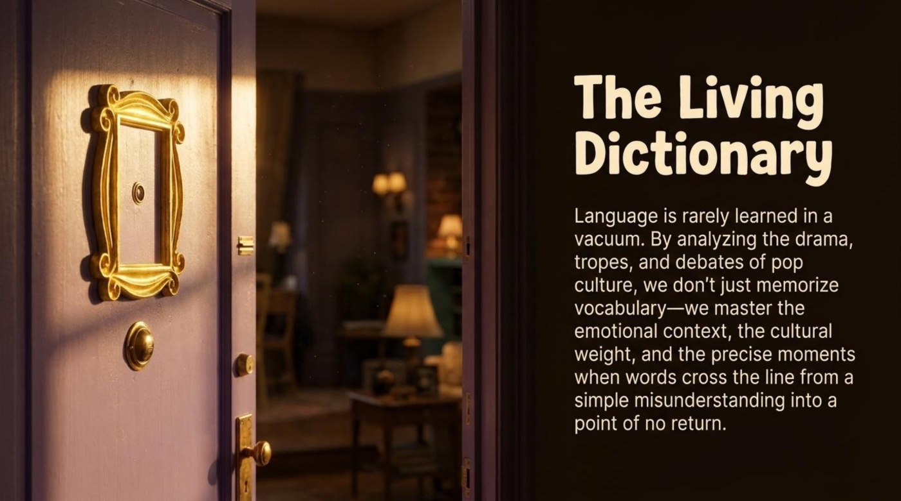
The material closes with the finest sentence in the whole deck, and it deserves to be quoted in full: “Language is rarely learned in a vacuum. By analyzing the drama, tropes, and debates of pop culture, we don’t just memorize vocabulary — we master the emotional context, the cultural weight, and the precise moments when words cross the line from a simple misunderstanding into a point of no return.” The main takeaway for language learners follows directly from that sentence: words memorized without their emotional context evaporate, while words learned inside a story — with faces, stakes, and consequences attached — stay for life. A learner who can explain why “No. A break from us.” is funny, tragic, and grammatically instructive at the same time has moved past translation and into genuine ownership of English.
The path forward is pleasantly concrete. Replay the episode with a notebook open and tick the fridge-door checklist yourself, once per idiom you catch in the wild. Retake the quiz above until every dot turns green, then argue the verdict section out loud from the team you disagree with. Most importantly, use three of the eight idioms this week in real conversations — a third wheel, a crossed boundary, or a well-timed “Let’s Ross it!” will do more for your fluency than any flash card. The episode’s characters learned the hard way that words have consequences; its learners get to study those consequences from a safe, comfortable, coffee-scented distance.